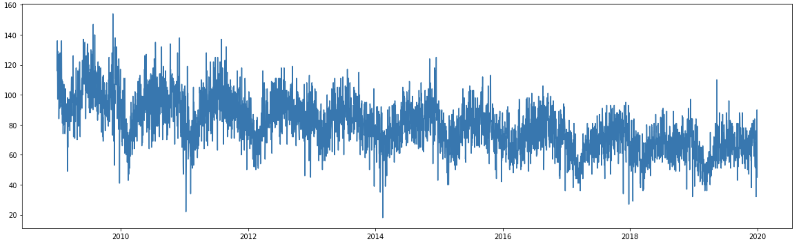

Time Series Forecasting - Prophet - Summary
- Home
- Inner Page
Step 1 - Data Preparation
We aggregated the Atlanta crimes by date and sorted by date ascending.
ds y
2009-01-01 116
2009-01-02 136
2009-01-03 113
2009-01-04 97
2009-01-05 129
Step 2 - Review Data
To get a general understanding and overview of our data we created a plot of crimes per date over our 10 year period to see if there were any noticable trends. There appeared to be a consistent trend with the crime rate gradually falling each year.
Step 3 - Model, Fit, Predict
We first split our data into a training set and a testing set. We used 80% of our data for training and the remaining 20% for testing.
Next we used cross validation to tune the hyperparameters. Using code from the Prophet diagnostics page we found these to be the best hyperparameters for our model:
- Changepoint Prior Scale: 0.01
- Seasonality Prior Scale: 0.01
Training Data
We then created and fit our model using our training data and the proper hyperparameters.


Scores for our training data:
- R2: .55
- MSE: 136.6
Testing Data
We then used our model to predict values on our testing set. Our R2 value for our testing set decreased to .148.
The chart below shows the actual number of crimes each day (blue) compared to the predicted number of crimes (red).

This model seems to be more sensitive to outliers. You can see around December and January of both years there are a few outliers which drag the predicted values in February down. However, in both years crime actually increased in February. Prophet appears to be more driven by outliers than ARIMA.
Step 4 - Forecasting
Finally, we created and fit a model using our entire dataset and predicted the number of crimes for the following two years (2020-2021).
prediction 2020-01-01 56.456298 2020-01-02 55.294014 2020-01-03 56.452136 2020-01-04 57.189774 2020-01-05 51.312000 ... ... 2021-12-27 57.271766 2021-12-28 53.167488 2021-12-29 50.616308 2021-12-30 49.285891 2021-12-31 50.275311

R2 value of .558.
Step 5 - What We Learned and Analysis
Analysis
Compared to ARIMA, Prophet had better accuracy in predicting the correct number of crimes that occured each day. ARIMA seemed to make more conservative predictions. When comparing ARIMA's predictions on the testing set to Prophet's predictions on the testing set, you can see that the prediction line on the ARIMA model is much tighter; it was less driven by the outliers. You also see this in the final forecasting.
What We Learned and How to Improve
While Prophet made more accurate predictions, the r2 score was still only a little over .50. What we learned from this is that is takes a lot of time and trial-and-error to find the best algorithmn for your data and then to find the best ways to tune and improve your model. Going forward, if we had more time to improve on our models and predictions, we would either try a new, non time series forecasting algorithm or for the Prophet model we would look more into the outliers and seasonality. With time series data and forecasting, seasonality, holidays, social and political events in the country and city are all important. With more time or going forward I would be interested to look more in depth at our outliers and see what they're telling us and how to potentially improve our model based on the findings.
Example inner page template